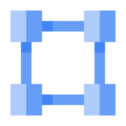

Google Cloud · Professional Agentic Architect
GCP Agentic Architecture Cert Prep
Five domains, 35 study modules and 5 practice-question sets, from choosing between automation and agents to deploying and securing them on Google Cloud.

Agent Solutions

AI-Assisted Dev


Custom Agents


Eval & Deploy

